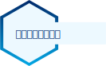
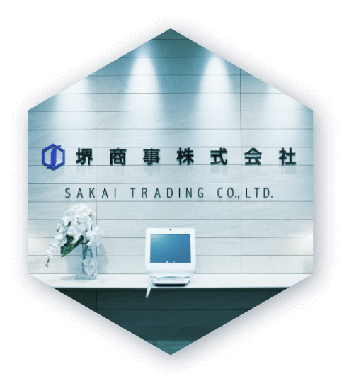
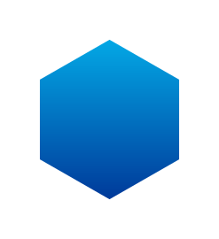

特別コンテンツ 01
上場企業とは
堺商事は、東証２部に上場しております！・・・と聞いても、実際に上場企業とは何か、イメージが沸かない方もいるのではないでしょうか。そこで、上場の意味や上場の目的等について、詳しくお伝えいたします。
上場とは
株式市場への上場とは、「証券取引所」に株式を公開し、株の売買が自由に行えるようになることをいいます。なお、株式市場に上場するためには、定められた厳しい基準をクリアする必要があります。

そもそも”株”とは？
会社が資金を得るために発行するものです。
会社が活動するには資金が必要ですが、その資金を提供してくれた人のことを株主といい、資金を出したことを証明するために発行するのが株です。また、会社が利益を上げたときに、株主はその一部を受け取る権利をもらいます。このような仕組みで成り立つ会社を株式会社といいます。上場するということは、その株が誰でも売買できるようになるということなのです。

国内の株式市場
日本には、東京証券取引所（東証）、名古屋証券取引所（名証）、福岡証券取引所（福証）、札幌証券取引所（札証）の４つの株式市場があります。ここでは東京証券取引所（東証）にフォーカスを当てて紹介します！
ここを押さえる！
東京証券取引所（東証）
東証第1部
株式市場のなかでも審査が
厳しいことで有名！
条件
- 株主数「800人以上」
- 流通株式数「2万単位以上」
- 流通株式時価総額「100億円以上」
- 流通株式比率「35％以上」
- 企業の時価総額「250億円以上」
- 連結純資産の額「50億円以上」
東証第2部
東証1部との違いは上場の条件！
中堅企業が多い
条件
- 株主数「400人以上」
- 流通株式数「2,000単位以上」
- 流通株式時価総額「10億円以上」
- 流通株式比率「25％以上」
マザーズ
将来性重視！
ベンチャー企業向けの市場
条件
- 株主数「150人以上」
- 流通株式数「1,000単位以上」
- 流通株式時価総額「5億円以上」
- 流通株式比率「25％以上」
JASDAQ
「スタンダード」と「グロース」の二種類の市場に分かれる
条件
東証第２部と同様の審査基準となります
上場企業で働くメリット
強固な基盤と環境


強固な基盤と環境
上場し、それを維持するというのはそれだけ企業の力が大きいということです。
また、倒産のリスクがかなり少ないため、安心して働ける環境があります。
上場企業は、きちんと売り上げや利益を獲得できている証明ともいえます。
そしてその利益が、待遇や年収として社員に還元されることが期待できます。
堺商事は実際に…
歴史ある基盤
堺化学工業という盤石な礎の上に、独自の経営戦略で８０年以上もの歴史を築いてきました。
オフィスは都心の高層ビル
本社および東京支店は駅と直結しており、アクセスは抜群です。本社は執務環境の改善や災害時の安全性確保を目的に、2017年9月に現在のオフィスに移転しました。
確かな安定性
1994年に大証新二部に上場し、2013年より東証二部に上場しています。また、10期以上連続で黒字を達成し、自己資本比率も40％を超えています。
溢れる可能性
上場企業になると社会的な信用が高まり、取引先も大きく拓けて様々な企業との
関わりが増えます。
溢れる可能性
上場企業になると社会的な信用が高まり、取引先も大きく拓けて様々な企業との
関わりが増えます。
堺商事は実際に…
皆さんもご存知のような業界のリーディングカンパニーをはじめ、業種・国内外を問わずあらゆる会社と安定した取引を行っています。時代によって常に変化する市場のニーズに応えるべく、素材メーカーと共に素材開発に貢献するなど、各業界の最先端技術に触れる機会も多いです。
さらに学ぶ
化学と
商社とは
世界は、近い。